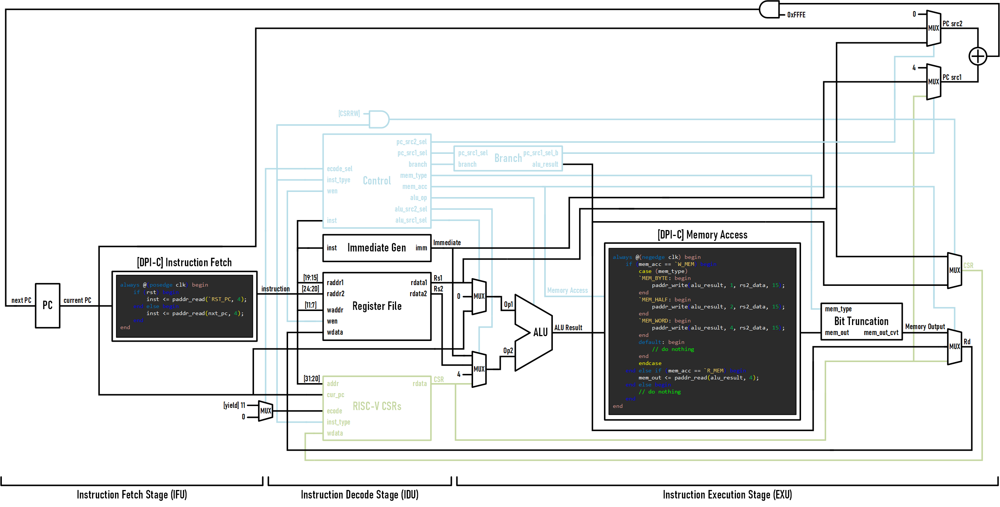
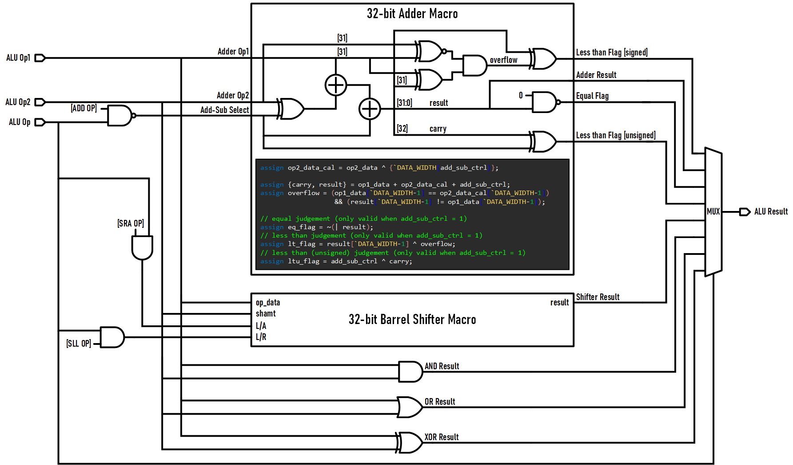

单周期CPU架构简介

本节中，我们主要介绍在C阶段实现的支持RV32E ISA的单周期CPU，该CPU对应的架构图如上图所示，整体上分为取值（Instruction Fetch）、**译码（Instruction Decode）与执行（Instruction Excecution）**三个阶段。
该CPU的工作原理与一些经典教材中的CPU完全类似，此处我们主要介绍几个设计中的注意点：
第一是CPU的访存行为，该CPU通过DPI-C机制实现访存，在一条指令的完整执行流程中，最多存在两次访存行为，第一次是取指，第二次是访存指令的访存行为。此处我们通过NPC中提供的统一接口paddr_read()与paddr_write()实现。同时，由于RV32E架构通过内存映射IO实现CPU与外设的交互，因此CPU对外设的访问被统一抽象为访存指令。
第二是CPU的异常响应机制实现，此处主要需要实现的是CPU的若干个CSR，以及对应用于实现异常响应机制的若干指令。由于CSR的行为与异常响应机制指令的相关性很强，故此处我们统一进行说明，总体上，与异常响应机制相关的指令主要可分为两类：
- 一类是
mret, ecall这类直接实现异常响应的指令，这类指令涉及对多个CSR的配置以及PC的跳转。
- 一类是
csrrw, csrrs这类单纯对CSR进行操作的CSR指令，这类指令涉及对某个CSR的原子性读写（这里的**“原子性”指对CSR的读-写（Read-Write）操作是原子的，即整个操作在单条指令内完成，不会被其他操作打断），这通常包括对CSR的读取**，对CSR的写回与对通用寄存器的写回三个子操作。
综合上述说明，我们其实可以发现，对CSR实现本身而言，我们只需要将其实现为可读/写的寄存器堆即可：
1
2
3
4
5
6
7
8
9
10
11
12
13
14
15
16
17
18
19
20
21
22
|
module ysyx_25070184_Csr(
input wire clk,
input wire rst,
input wire [`ysyx_25070184_CSR_ADDR_WIDTH-1:0] addr, // atomically operates one CSR
input wire [`ysyx_25070184_CSR_OPTYPE-1:0] inst_type,
input wire [`ysyx_25070184_ADDR_WIDTH-1:0] cur_pc,
input wire [`ysyx_25070184_DATA_WIDTH-1:0] ecode,
input wire [`ysyx_25070184_DATA_WIDTH-1:0] wdata,
output reg [`ysyx_25070184_DATA_WIDTH-1:0] rdata
);
// instantiate CSRs one by one
reg [`ysyx_25070184_DATA_WIDTH-1:0] mstatus; // machine status registers
reg [`ysyx_25070184_DATA_WIDTH-1:0] mcause; // machine cause register
reg [`ysyx_25070184_DATA_WIDTH-1:0] mtvec; // machine trap-vector base-address register
reg [`ysyx_25070184_DATA_WIDTH-1:0] mepc; // machine exception program counter
endmodule
|
在该模块中，CSR的写入由指令类型inst_type与CSR指令中的地址字段addr共同确定，同时cur_pc（当前的PC值）, ecode（异常号）, wdata（CSR指令的写回值）用于传递写入CSR的值（因为在ecall指令中，需要同时写入多个CSR）：
1
2
3
4
5
6
7
8
9
10
11
12
13
14
15
16
17
18
19
20
21
22
23
24
25
26
27
28
29
30
31
32
33
34
35
36
37
38
39
40
|
// CSRs write
always @(posedge clk) begin
if (rst) begin
mstatus <= `ysyx_25070184_MSTATUS_RSTVAL;
end else begin
case (inst_type)
`ysyx_25070184_CSR_ECALL: begin
mstatus[`ysyx_25070184_MPIE_LOCATE] <= mstatus[`ysyx_25070184_MIE_LOCATE]; // MPIE = MIE
mstatus[`ysyx_25070184_MIE_LOCATE] <= 1'b0; // reset MIE
mepc <= cur_pc; // store current pc
mcause <= ecode; // store exception code
end
`ysyx_25070184_CSR_CSRRS, `ysyx_25070184_CSR_CSRRW: begin
case (addr)
`ysyx_25070184_MSTATUS_ADDR: begin
mstatus <= wdata;
end
`ysyx_25070184_MCAUSE_ADDR: begin
mcause <= wdata;
end
`ysyx_25070184_MTVEC_ADDR: begin
mtvec <= wdata;
end
`ysyx_25070184_MEPC_ADDR: begin
mepc <= wdata;
end
default: begin
// do nothing
end
endcase
end
`ysyx_25070184_CSR_MRET: begin
mstatus[`ysyx_25070184_MIE_LOCATE] <= mstatus[`ysyx_25070184_MPIE_LOCATE]; // MIE = MPIE
end
default: begin
// do nothing
end
endcase
end
end
|
CSR的读取同样由指令类型inst_type与CSR指令中的地址字段addr共同确定，对于CSR指令，读出的CSR在执行阶段被作为操作数；对于mret与ecall指令，读出的CSR在执行阶段被作为下一条指令的PC值：
1
2
3
4
5
6
7
8
9
10
11
12
13
14
15
16
17
18
19
20
21
22
23
24
25
26
|
// CSRs read
always @(*) begin
if (inst_type == `ysyx_25070184_CSR_ECALL) begin
rdata = mtvec;
end else if (inst_type == `ysyx_25070184_CSR_MRET) begin
rdata = mepc;
end else begin
case (addr)
`ysyx_25070184_MSTATUS_ADDR: begin
rdata = mstatus;
end
`ysyx_25070184_MCAUSE_ADDR: begin
rdata = mcause;
end
`ysyx_25070184_MTVEC_ADDR: begin
rdata = mtvec;
end
`ysyx_25070184_MEPC_ADDR: begin
rdata = mepc;
end
default: begin
rdata = {`ysyx_25070184_DATA_WIDTH{1'b0}};
end
endcase
end
end
|
ALU的性能评估

单周期CPU中所使用的ALU架构如上图所示，其实现了加法器的复用，通过单个加法器实现了加法、减法、小于（有符号）、**小于（无符号）**与等于共5种运算。此处，我们主要探讨一下ALU性能评估中的一个注意点，而不再赘述ALU的具体实现原理。
由于ALU通过纯组合逻辑实现，因此在使用Yosys-STA进行性能评估时，我们无法获取其时序方面的相关性能指标（如最大工作频率）。而对于纯组合逻辑模块而言，我们主要关注端到端最大组合逻辑延时这一性能指标，它可以评估当我们将该模块集成至存在时序逻辑的系统中时，该模块所能承载的最大工作频率。
而当我们单独对ALU进行性能评估时，我们可以通过寄存器将ALU的输入/输出打一拍，将其转换为含时序逻辑的模块，从而实现对该性能指标的量化。